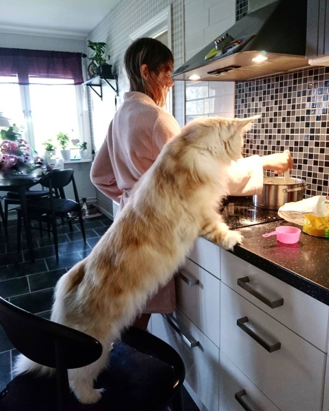

Crea una página en Facebook que atraiga fans
- PAQUETE 400,000 LIKES PÁGINA DE FANS - Likes Reales
“Aficionados de los Mets, les debo una explicación y una disculpa”, expresó Bauer por medio de Twitter. “Mi intención nunca fue engañar a su fanaticada, ni bromear de ninguna manera”. El viernes, un enlace para mercancía de los Mets fue puesto en la página de Instagram de Bauer, y una página para ganar una gorra del equipo firmada por Bauer fue publicada en su portal ... - Página de fans — SentimientosDeMierda💔
El pasado 27 de junio, después de que la Audiencia de Navarra decretara libertad provisional bajo fianza de 6.000 euros para los cinco miembros de La Manada no sin las críticas de buena parte de la población, se creaba en Facebook la página oficial de El Prenda, llamada "Club De Fans De José Ángel Prenda". - Club Seat Exeo - Página de fans y propietarios
Por lo tanto, si tu publicación es relevante para los fans de esa página enlazada puedes conseguir que sea compartida y, con ello, atraer más fans para tu propia página. Las finalidades de enlazar a otras páginas de Facebook. Existen 2 finalidades clave por las que enlazar a otras páginas de Facebook en tu muro es algo interesante: - Página de fans
Una vez que consigues 100 fans, no puedes cambiar el nombre de tu página, así es que asegúrate de que lo elegiste sabiamente desde el principio. El nombre de tu marca es el título ideal para ... - López Espí
Página de fans. 1,5 millones de valoraciones 277 000 valoraciones ¿Ves? La aplicación es perfecta para eso. Suena genial Nah, no me interesa. Página de fans ig: gatitosentimental// 2da cuenta tumblr: @desastresuperior 🐾🍒 ... vendo esta cuenta de 15.6k seguidores!!!!! consulten nomaaas en mi otra cuenta ... - ¿Cómo crear una página de fans facebook? - Sistema TDC
Página de fans — SentimientosDeMierda💔 ... Yo personalmente no estoy para aguantar berrinches de personas que no saben madurar, uno da el intento y no se aprecia, yo no soy adivina y no estoy para el webeo de nadie juju. 332 notas. Abrir en la aplicación; Facebook; Enviar a Twitter; - Club Chevrolet Cruze - Página de fans y propietarios
Página de fans vs. Página que generan fans. Como figura pública o celebridad, corres el riesgo de tener muchas imitaciones o perfiles sociales falsos. Al usar una Página de fans, puedes verificar tu cuenta. Una vez que la hayas verificado, una insignia azul aparecerá al lado del nombre de tu Página. - PAQUETE 7,000 LIKES PÁGINA DE FANS - Likes Reales
¿Por qué crear un página de fans en Facebook? Aumenta el tráfico a tu página web. Facebook es la red social más utilizada, es por eso que muchos usuarios utilizan esta red para encontrar información de una marca o empresa, es por eso que para aumentar el tráfico se debe tener una buena estrategia de contenido, ya que así tendrás mayor interacción y visitas. - Cómo Convertir mi Perfil de Facebook en una Página Fan ...
We would like to show you a description here but the site won’t allow us. - 5 pasos para crear tu Página de Fans en Facebook
Una página de Facebook, también conocida como página de fans, es una sencilla página que se puede personalizar y vincularle recursos externos que estén en otro dominio y de esta forma disponer de otras opciones, imposible de lograr con la página tradicional o página de perfil, creada automáticamente al registrarse el usuario en Facebook.

menu Latest Video Start A Business search person insert_emoticon My Account Entrepreneur Insider Submit Article Saved Content My Account Sign Out clear Video Podcasts Articles Start A Business Store Books Franchise Franchise Home Franchise 500 Ranking Business Opportunities List Franchises For Sale Franchise Suppliers Directory Topics Leadership Inspiration Growth Strategies Marketing Technology Social Media Finance Entrepreneurs Starting a Business Franchise Editions United States India Asia Pacific Middle East Europe South Africa Español Georgia Other Contact Advertise Reprints & Licensing Terms of Use Privacy Policy Cookies Policy Site Map Marketing
Crea una página en Facebook que atraiga fans
Las páginas de fans se están convirtiendo en herramientas de negocios. Es importante que sepas posicionar tu marca y hacerla atractiva. Next Article -- shares link Add to Queue Crédito: Depositphotos.com Starr Hall February 10, 2012 4 min read Las opiniones expresadas por los colaboradores de Entrepreneur son personales. Mientras Facebook continúa mejorando las opciones para crear una página de fans , la mayoría de las empresas no están luchando para ir a la par de los cambios, pero sí continúan tratando de entender cómo promocionar sus marcas en este medio. Debido a algunos cambios en esta plataforma , las estrategias que usabas hace un mes para aumentar el número de “Me gusta”, así como para interactuar con tus fans quizá ya no sea efectiva.
Aquí te presentamos algunos ajustes que te ayudarán a facilitarle a los prospectos a encontrarte, así como algunos tips para conseguir más fans.
Cambia tu URL
Si la URL de tu página todavía es un cúmulo de números, estás dificultando el que los prospectos te encuentren y estás perdiendo una oportunidad de posicionar tu marca. Hace poco, Facebook puso el requerimiento de que necesitas conseguir 25 likes en tu página antes de cambiar el nombre de tu URL. Ahora, lo que necesitas hacer es ir a www.facebook.com/username y poner tu nombre en la URL, lo que facilitará las ligas y referencias a tu página.
Aprende a nombrar tu página
Una vez que consigues 100 fans, no puedes cambiar el nombre de tu página, así es que asegúrate de que lo elegiste sabiamente desde el principio. El nombre de tu marca es el título ideal para hacer más fácil que la gente te encuentre. Lo puedes cambiar si tienes menos de 100 likes, yendo a la opción Editar, selecciona Información Básica del menú a la izquierda, cambia el texto en el campo de Nombre y salva tus cambios.
Lleva a los usuarios a una etiqueta de bienvenida, no a tu muro
Cuando mandas gente a tu página de fans y haces que caigan en tu Muro, tus posts probablemente no serán suficientes para hacer que “les gustes”. Los posts sólo son tú hablando. Sin importar si estás dando información valiosa, los prospectos necesitan una razón para ser tu fan. En lugar, crea una etiqueta de bienvenida, la cual puede incluir un agradecimiento o algo atractivo como un ebook, o una serie de videos para motivarlos a ser tus fans. Algunos sitios como woobox.com ofrecen pruebas gratis y tutoriales paso a paso para personalizar tu página.
Atrae a los fans potenciales
Necesitas ofrecer algo que atraiga a la gente. Por ejemplo, puedes usar las aplicaciones de Facebook para crear encuestas o juegos. Esto lo puedes poner en tu etiqueta de bienvenida. Wildfireapp.com entrega una prueba gratis para que navegues en sus aplicaciones. Si decides usar este programa, puedes encontrar opciones desde $5 USD. SocialUps hace juegos para páginas de fans.
Investiga el mercado
Las mejoras recientes al analytics de las páginas de fans facilitan conocer a tus prospectos, incluyendo su sexo, edad y dónde viven. También, puedes ver los posts que más les gustaron y seguir un reporte viral que muestra si hicieron algo en tu página que sus amigos vieron. Esta actividad viral extiende tu alcance de amigos a amigos. Sin embargo, esta opción sólo permite ver que tus fans están hablando de tu con otra gente; no comparte información acerca de a quién se la comparte.
Keep Reading
Mexico DesconocidoFilminLatino, una plataforma digital donde encontrarás películas mexicanas gratis
Rodrigo Osegueda Nupcias MagazineDía de la Margarita, de su origen y 8 recetas originales
México Desconocido Cine PremiereViolet Evergarden: La película llegará a cines de México y Latinoamérica
Gustavo Á. Pineda AltonivelEstados Unidos arresta a la esposa del Chapo Guzmán
Surya PalaciosLatest on Entrepreneur
Company Advertise Brand Licensing Help Center Entrepreneur Media Departments Staff Contribute Reprints & Licensing Products Franchise Podcasts Publish Your Book Entrepreneur Merchandise Editions United States India Asia Pacific Middle East Europe Español Georgia South Africa Get the Magazine Join Our Newsletter Terms of Use Privacy Policy Cookies Policy Help Center Site Map Copyright © 2021 Entrepreneur Media, Inc. All rights reserved.Entrepreneur® and its related marks are registered trademarks of Entrepreneur Media Inc. Marketing
Deja de hablar en clichés: 4 consejos para un marketing más creativo y original
Marketing4 tendencias que marcarán al marketing digital en 2021
Marketing3 sesgos psicológicos que afectan si alguien compra tu producto o no
MarketingConoce el nuevo ranking 2020 de Best Global Brands de Interbrand
MarketingDesafía la forma en la que piensan tus consumidores: haz lo que quieras
